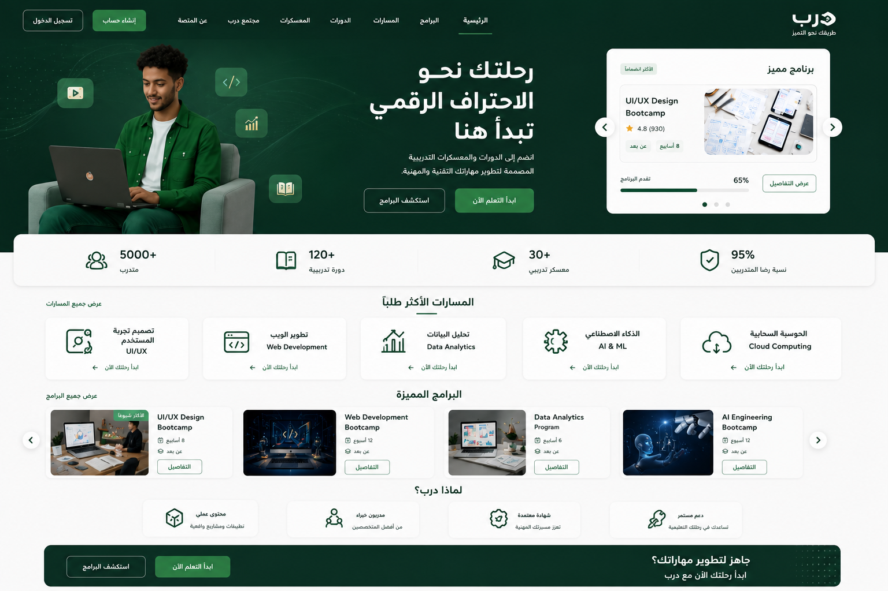

Darb LMS
Designing a Learning Management System for course enrollment, learning management, and collaboration.
Problem
Designing a learning platform that serves trainees, instructors, and administrators can become complex when each role has different goals and workflows. The challenge was to create a structured experience that simplifies course enrollment, learning management, collaboration, and progress tracking while keeping the platform easy to navigate.
Process
The design process started with defining user roles and mapping their key journeys. User flows were created for course discovery, enrollment, assignments, projects, and administrative tasks. Wireframes and interface concepts were then developed and refined through team collaboration to ensure a consistent and scalable learning experience.
Solution & Outcome
The final solution delivers a Learning Management System that enables users to explore courses, access learning materials, collaborate through project groups, track progress, and manage educational content through role-based dashboards and administrative tools.